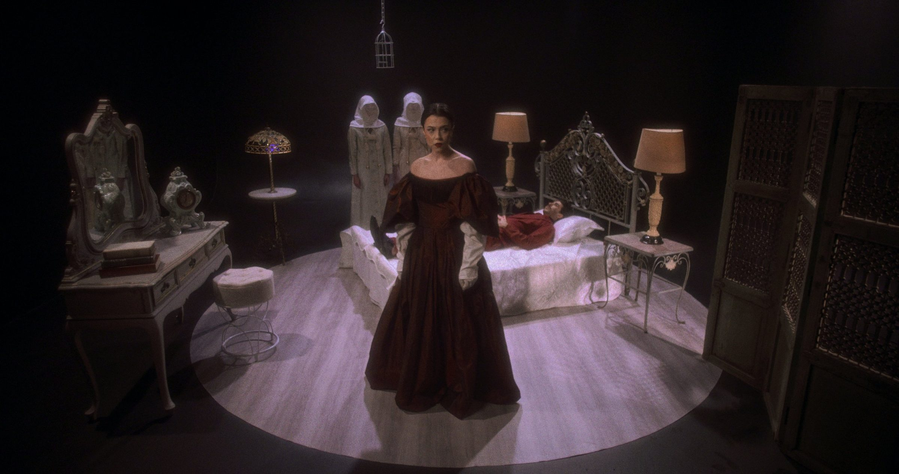

Color Grading · São Marcos RS · Rio de Janeiro
We are
color.
A color grading studio for film, advertising and music — from Brazil to the world.


Brands that have been through our color


And artists like: Ana Hickmann · Pocah · Leonardo · Cleo Pires · Antonia Morais · Xamã
What we do
Services
Color grading for film & TV
Full DI for features, shorts and series, from dailies to master.
Advertising
Commercials and branded content with the consistency brands demand.
Music videos
Signature looks for artists — from naturalistic to extreme.
Live remote sessions
Watch and approve in real time, wherever you are.
HDR & finishing
SDR, HDR and DCP delivery, to the standard of every screen.
Look development
Look design before the shoot, together with the director and DP.
Infrastructure
Based in São Marcos, southern Brazil, with live remote sessions available worldwide. And when a project calls for presence in Rio de Janeiro, we work through our partnership with O2, using their infrastructure.
What people say about our color
Excellent! Impeccable technical level and fast responses before, during and after delivery. My next music video will be graded by them again.
Highly qualified professionals with a strong artistic sense. Vertigo has been grading films, advertising and institutional work for us with speed and great quality.
Unquestionable quality — it's hard to find colorists at this level!